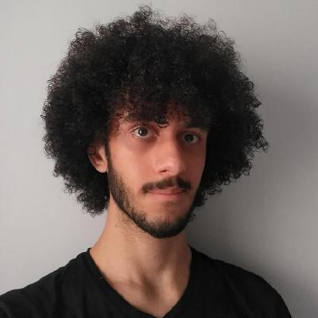

Fase 1
Nome: Victor Carvalho Ribeiro Barbosa
RA: 324133336
Endereço: Belo Horizonte, MG
Sobre mim
Me chamo Victor, moro com meus pais e minha irmã mais nova, com quem eu tenho uma relação muito
boa. Gosto de estudar sobre TI, principalmente sobre infra e hardware e software em mais baixo
nível, tanto que estou lendo um livro chamado "Introdução a Arquitetura de Computadores", o qual
eu estou adorando. Gosto muito de jogar de tudo um pouco e faço ao menos uma vez por semana uma
hora de caminhada. Estou começando a me preocupar mais com relação a exercício físico.
Vida profissional/acadêmica
Fiz os 9 anos do ensino fundamental em uma escola pública, a Escola Estadual Professor Bolivar de Freitas.
Passei os 3 anos do ensino médio como bolsista no Colégio Santa Maria Minas
Após a escola, em 2023, fiz os cursos de Python, SQL, HTML e CSS da Hashtag Treinamentos
Parte pelos cursos, fui contratado como jovem aprendiz em uma vaga de DevOps no final de 2023
Por causa do trabalho, Comecei a cursar Ciências da Computação. Estou no terceiro período.
Após um ano na empresa, mudei o contrato para estágio e tenho altas chances de contratação no fim desse ano
UCs Cursadas
Primeiro Período: Programação - Modelagem de Software
Segundo Período: Sistemas Computacionais e Segurança - Redes e Segurança
Terceiro período: Sistemas Distribuídos - Desenvolvimento Web e Usabilidade